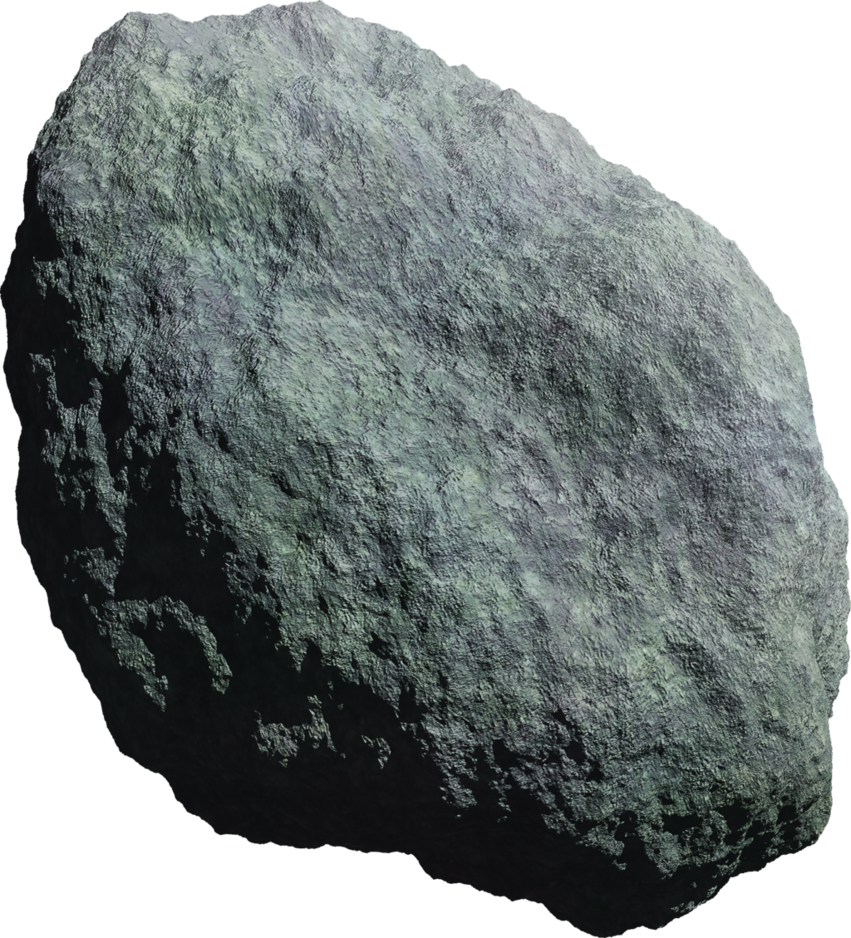

Carethor System 
Carethor:
Initially skipped over during the initial surveys done by the Empire
when Region Twelve was scouted,
Carethor
later became the singular attention for the
Peranno Research Institute
. They accepted a grant from the
Empire
to establish a research instillation in orbit of the only planet in the system.
Carethor
is a large gas giant that orbits incredibly slowly around the system's single star. It is estimated
that the gas giant completes one revolution around the star every twenty three years. In orbit
around
the gas giant are a series of moons as well as the
Peranno Installation
, a space station that is well stocked, sustainable, and focused entirely on researching the gas
giant.
Due to the nature of their research, a private security has been hired to keep people away from the
station.
Carethor
boasts four moons, all in varying levels of habitability.
Bralast:
The moon of Bralast
is the smallest of all the moons in orbit of Carethor
, but despite this, it is the most habitable. Settlers on
Bralast
have established an easy life, enjoying the lush splendor of the moon's jungles and rivers. They
will
trade often with the
Peranno Installation
for credits and other pieces of technology.
Bronesh:
This moon, if you could call it that, is barely more than an asteroid that rockets
around
Carethor at a blistering speed. The first thing done by the Peranno Research
Institute,
was calculate
the
celestial body's orbital path to ensure that it would not collide with their station. Projections
estimate
that Bronesh will collide with Halish in one hundred and three years.
Halish:
Settlers of Halish make ample use of Halish's slow orbit around Carethor to exploit
the
constant torrent of sunlight from the star. Large amounts of the desert moon's land has been
converted
into
vast solar farms. These power cells are shipped out across Region Twelve. Due to an incredibly thin
atmosphere, a breathing apparatus is required here.
Paramis:
The largest of Carethor's moons boasts high mountains and deep craters. Temperatures
fluctuate wildly on the planet's surface and intense rainstorms have stagnated colonization progress
on
the
moon. What wildlife has made its home here has shown incredible hostility to settlers, and what few
folk
have remained in the moon have taken to settling within the caves of the moon as a means to avoid
the
weather and wildlife.
Potential Roleplaying Opportunities:
There are a number of reasons one could find themselves
coming
to Carethor. Those with scientific aptitude could find themselves in the employ of the
Peranno
Installation.
Thieves and splicers could find quite a pretty credit stealing secrets from the
reclusive
scientists as
well. One seeking fame and fortune could find themselves on Paramis, hunting a creature of
great
renown.
Or
perhaps you're looking to disrupt the flow of energy in Region Twelve, Halish is a
prime
target.